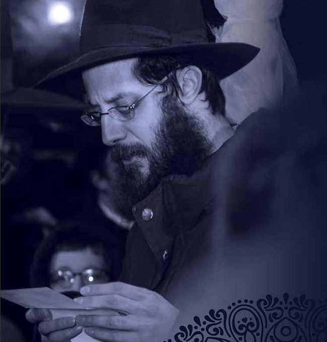

א חסיד מאכט א סביבה
I write this to you in the middle of the Shiva of one of my dearest friends, Harav Chaim Shneur Zalman A”H ben yiblt ” a Harav Shalom Shimon Yaakov sheyichye Baras. In addition to being my personal friend since kindergarten, he served as the main Mashpia in our Yeshiva in Cincinnati for the last 12 years; A position he filled with great love, dedication, and self-sacrifice.

It is not our custom to say, or write, eulogies; Yet we are commanded that “Vehachai yitten el libo” — “The living shall take to heart,” thus — even though it is clear to me that Reb Zalman would not enjoy being spoken about publicly — we must internalize the tremendous lessons which can be learned from this very special person.
To give some perspective:
When you deal with Yeshiva boys, you end up dealing with many different types of bochurim. Some are more studious, and others more mischievous. Some end up on shlichus or in Chinuch, while others are focused on business. Some are more involved in their Avodas Hashem, while others are less involved. At his Levaya last Friday in front of 770, they were all there. Alumni appeared from all over the world to pay their last respects to their beloved Mashpia. Chazal taught us: “The beginning is lodged into the end.” Because he loved them all from the very beginning, they all came out for him in the end.
Reb Zalman was blessed by the Rebbe with “long and healthy years, Chassidishe years”. While we do not know, and may never know, the true intention of the Rebbe’s Bracha, one thing is clear: Reb Zalman was given a special bracha to impact people in an immediate and very deep way. While for many people, it takes months or years to have an impact and leave an impression on others, with Reb Zalman it was immediate and deep. The toughest talmidim melted in his presence. History does not judge the length of a person’s life by the amount of years he lived, but, rather, by the impact he had. If you ask any person how long the Arizal lived, they would answer “A very long time” because every Jew has been affected by his teachings. His physical years were just 38 years in this world, just like Reb Zalman.
***
Throughout the Shiva, I have heard so many stories from current and past talmidim about the deep connection which they felt to their beloved Mashpia, and I asked them to tell me what began that connection. While many answered “just seeing an example of a true Chassid,” most told me how Reb Zalman took from his time to notice them and to help them through the various issues they were having. Reb Zalman was a very tall person – “head and shoulders above the rest” — yet he was always looking for the small things that a talmid might be missing. If a bochur felt that he was not capable of learning well, for example, Reb Zalman would find every opportunity to show him how successful he could be. If such a bochur asked a silly question, Reb Zalman would ”fix it” — with a slight change of words — and then tell him “Wow!“ “This is the question of one of the Rishonim!” Or, if he noticed that a talmid seemed sad or hungry, he would drive them to the local store and ask them to buy a special treat. His unlimited patience allowed each talmid to feel comfortable discussing anything with him at any time.
Thirty-eight is the gimatriya (the numerical value) of the word “Libo”. I can write stories for hours on end with lessons we can take to our hearts. I want to, at least, share with you a few practical things that Reb Zalman “fought” for, that we can all learn from in our own Avoda — the true aspect of “Vehachai yitten el libo”:
Really believing in our children and our talmidim. There were countless times that we would sit in meetings of the Hanhalla and notice a pattern: There were talmidim which were only excelling in his class! He could not understand why that was. The answer was simple: he actually believed that they were good and capable — and went the extra step to show them that he believed in them — and they responded with success.
Learning Chassidus before davening every day. Ever since he started learning Chassidus as a bochur, one thing bothered R’ Zalman: “How is it possible that in most Yeshivos, after a Chassidishe Farbrengen there is no seder Chassidus? If the bochurim need some extra sleep, then let the whole seder start late, but the day should still start with Chassidus!” This is something he implemented in the Yeshiva, and even extended beyond the Yeshiva walls. Every “Bein Hazemanim” he would give a shiur every morning via a conference call in order to assist the talmidim to learn Chassidus before davening. His “Chaim” was “Shneur Zalman” – Tanya and Chassidus.
Davening with Pirush Hamilos. Davening was where Reb Zalman’s heart would express itself. About his davening, one respected shliach told me: “Halevai my Ne’ilah on Yom Kippur would be so devoted to Hashem like his regular weekday Mincha!” He constantly spoke about understanding what we are saying during davening, and about davening slowly. When the linear “Tzivos Hashem Siddur” came out, he wanted the Hanhalla to make a rule that each Talmid must get one. We decided not to make that rule. He was disappointed and decided that he would lead by example. The next day he came to Yeshiva and davened himself with that Siddur! With time, bochurim saw the mashpia with that siddur and followed suit. Today, most Talmidim daven with a siddur with Pirush Hamilos.
Invest in your own Children. I heard the following from Reb Zalman hundreds of times: “Every interaction I have with each of my children, I view as a Chinuch opportunity.” He loved his personal family and would spend so much time strategizing how to best use every interaction with them to improve their chinuch. His shlichus in Yeshiva did not come at the expense of his family, he fused them together. We must always remember that in our Avoda.
Reb Zalman’s Emunah in the Rebbe and the imminence of Moshiach – was unshakable (see the song which he wrote in Yiddish). His birthday was 27 Adar 1, and he would constantly be learning the Maamar “VeAta Tetzave” to strengthen his Hiskashrus in this time of the final test before the Geula.
In short: Reb Zalman was a true Chassid that had a tremendous impact on all those around him: In the words of the Hayom Yom of the day of his untimely and shocking petirah, 30 Adar 1: “My revered father, the Rebbe [Rashab], once said: “A chassid creates an environment. If not, he must carefully check through his own knapsack; he must examine his own spiritual state. The very fact that he is not creating an environment should crush him like a splinter. He should ask himself: ‘What am I doing in this world?’”
Reb Zalman, you created such a s’viva — you belong back with us in this world
A song in Yiddish Rabbi Baras Wrote During his Terrible Illness:
וואס פארלאנגט מען פון א איד
די קראנקייט ביי עם ווערט שטארקער געשווינד
דאס אטעמען קומט שוין אן גאר שווער
ווייסט ניט וואס צו טאן, ער קען שוין נישט מעהר
פון זיין טאט’ן אין הימל האט ער נאר איין באגער
[די צוקומט קען ער דאך נישט זעהן]
די הארץ עס קלאפט עם אן אויפהער
פון די אויגן גיסן טרערן – א שטארקן געוויין
ח”ו ווייב און קינדער איבערלאזן אליין
קינדער דארפ’ן דאך די עלטערן – יעדער ווייסט
ערציען צו לעבן ווי דער אויבערשטער הייסט
ליב האבן א אידן און דער הייליגער תורה
און פאר יעדן חוץ דער אויבערשטער ניט האבן קיין מורא
קינדער דארפ’ן אין אונז אלעמאל זעהן
לימוד ודרכי החסידות מיט’ן גאנצן ברען
צו התקשרות צו’ם רבי’ן טוט מען שטרעבן
אז עס זאל אלעמאל דורכנעמען דאס גאנגן לעבן
דער רבי זאגט אז עס העלפט דער בטחון
אז עס דערמוטיגט נישט דארף מען זיך פרעגן “היתכן??”
זיך אריינווארפן אין די מאמרים און שיחות –
דאס זעהן אין די ווערטער
וועט עס אונז זיכער אויפהויבן אין אלע ערטער
“טראכט גוט וועט זיין גוט” דערהערט מען געוויס
דער רבי אונזער קאפ – מיר זיינען די פיס
אזוי אויך אז מען לערנט די תורה פון גאולה ומשיח
וועט ער קומען צו גייען ווי דער רבי איז אונז מבטיח!
Rabbi Sholom Ber Avtzon. "א חסיד מאכט א סביבה." Beis Moshiach, no. 1158 (March 15, 2019).